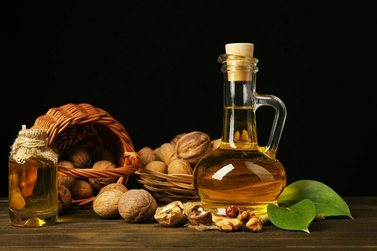

Масло Грецкого ореха

Описание:
Масло грецкого ореха (смесь) Дивеево для хрустящей поджарки — бесподобный натуральный продукт, которым любят лакомиться взрослые и дети. Густые ореховые леса и рощи покрывают склоны гор Закавказья и Средней Азии, а умелые руки человека научились делать из плодов этого дерева драгоценное масло. За уникальные свойства его заслуженно сравнивают с жидким золотом и почитают во многих кухнях и медицинских традициях мира.
Характеристики:
- Тип продукта: Масло
- Объем: 250 мл
- Страна: Россия
Подробное описание товара:
Если вы живете активной жизнью и не представляете своих будней без здорового питания, обратите внимание на эту интересную пищу. Ореховое масло — не только приятнейшая добавка к мясным и вегетарианским блюдам, но также ценный источник эссенциальных нутриентов и хорошего настроения.
Как так получилось, что масло из ядер грецкого, иначе — царского, ореха настолько полезно? В чем скрыта его тайная сила? Об этом рассказывают специалисты-диетологи. По их данным, в продукте содержатся:
- поли- и мононенасыщенные жирные кислоты — линолевая, линоленовая и олеиновая — очень важные вещества, чья концентрация в этом масле очень значительна;
- насыщенные ЖК — стеариновая и пальмитиновая;
- кальциферол;
- токоферол;
- каротиноиды и ретинол;
- аскорбиновая кислота;
- различные минералы (марганец, магний, железо, медь, цинк и т.д.).
Указанные вещества помогают нашему телу сохранить молодость и силу, активно противодействовать преждевременной старости, быть бодрым и веселым.
Как ореховое масло влияет на организм человека?
- Оказывает мощное кардио- и ангиопротекторное действие. Его регулярное употребление — отличная профилактика сосудистых заболеваний, сердечных и цереброваскулярных патологий;
- Увеличивает толерантность к глюкозе, мягко контролирует уровень сахара в крови, поэтому эффективно при диагностированной склонности к сахарному диабету;
- Обладает омолаживающим эффектом, так как в коже и внутренних органах противодействует опасным свободным кислородным радикалам;
- Делает волосы послушными, густыми и сияющими, помогает исправить косметические дефекты проблемной кожи;
- Предохраняет наш скелет от переломов, а зубы — от деструкции и выпадения;
- Имеет сильный иммуностимулирующий эффект, помогает организму целенаправленно бороться с инфекцией;
- Оказывает противовоспалительный эффект, способствует скорейшему заживлению ран и регенерации эпителиальной ткани;
- Гарантирует правильный синтез белков крови, полноценное течение внутриклеточных процессов окисления и выработки энергии во всех тканях нашего тела.
Состав:
Масло грецкого ореха нерафинированное.
Все права защищены © А.М. Кокорев 2019